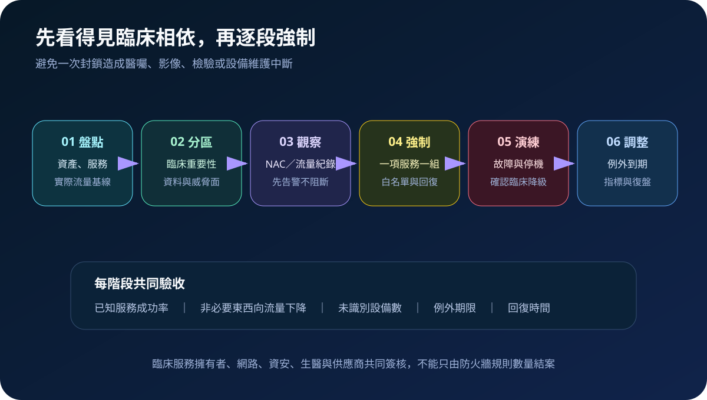
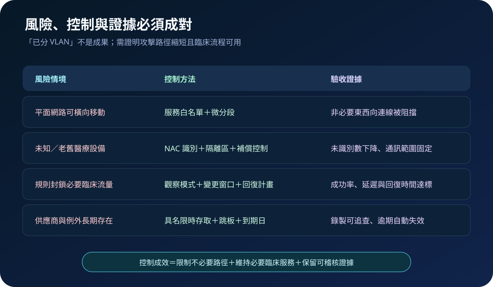

醫療資安國際觀察 · 2026-08-25
醫療網路不只切 VLAN：從信任區域到零信任驗收
作者：Dr. William｜醫療資訊與資安治理實務工作者
醫院的網路分段若只依樓層或 VLAN 劃線，已受害帳號與設備仍可能沿著必要服務連線橫向移動。可驗收的零信任分段，必須以臨床服務相依為基礎，逐次判斷身分、裝置、資源與情境，限制不必要的東西向流量。
名詞解釋：區域縮小範圍，政策決定每次連線
microsegmentation 將大型網路再縮成以工作負載或服務為中心的細小邊界；trust zone 依臨床用途、資料敏感度與風險建立信任區域；NAC 識別連線裝置並套用准入政策；east-west traffic 是院內系統彼此的橫向流量。零信任不因「位於院內」自動信任，仍以最小權限核准必要資源。
國際現況與適用邊界
NIST SP 800-207 將零信任定義為從靜態網路邊界轉向保護使用者、資產與資源，不因網路位置或資產所有權授予隱含信任。ENISA 於 2026 年 7 月發布醫院與醫療服務提供者採購指引，要求在完整採購生命週期納入資安目標、明確要求及供應商應提供的資訊。兩者共同支持「資源導向政策＋生命週期驗收」的治理方式，但不代表採用特定產品即可完成零信任。
法域界線：NIST 文件與 ENISA 對歐洲法規框架的對應，不是台灣醫院的直接法定義務。台灣醫療機構可將其轉為風險分區、採購條款與技術驗收；實際適用仍應依台灣法規、主管機關公告、院內政策、契約與臨床安全確認。
規劃：從一項高影響服務建立依賴地圖
範圍可先選擇 PACS、檢驗、藥事或遠端設備維護等高影響服務，盤點使用者、設備、連接埠、名稱解析、時間同步、身分服務、供應商與停機流程。角色至少包含臨床服務擁有者、網路、資安、生醫、維運供應商與變更管理。驗收指標可包含未識別設備數、非必要東西向流量阻擋率、已知服務成功率、規則例外數與到期率，以及錯誤封鎖的回復時間。

實作：觀察、限縮、驗證，再擴大
- 建立清冊：把 MAC、IP、設備型號與擁有者連到實際服務，未知設備先進隔離或觀察區。
- 定義區域：依臨床重要性與通訊需求建立臨床、設備、管理及供應商區，不以組織圖代替資料流。
- 觀察流量：收集必要東西向連線、尖峰與批次作業，辨識硬編碼位址及舊式協定。
- 逐項強制：先允許已知服務，阻擋非必要路徑；管理介面採 PAM、JIT 與受控跳板。
- 演練失敗：測試 NAC、政策引擎或網路設備故障，確認急診、交班與停機流程仍可運作。
- 持續治理：新增設備、韌體更新、供應商更換及系統退場時同步調整規則與相依清冊。
風險：過度封鎖與永久例外同樣危險
一次全面套用規則可能中斷醫囑、影像或設備維護；長期僅告警則不會縮小攻擊路徑。其他失敗模式包括無法識別老舊設備、共用帳號破壞可追溯性、供應商 VPN 直達全院，以及緊急例外沒有到期日。控制應採觀察模式、分批強制、明確回復與限時例外，並用臨床成功率與攻擊路徑測試共同驗收。

可執行清單
- 是否知道一項高影響臨床服務所有必要的東西向連線？
- 未知及 EOL／EOS 醫療設備是否有識別、隔離與補償控制？
- 供應商是否使用具名、限時、可記錄的維運路徑？
- 規則是否先觀察再強制，且具回復方案與臨床簽核？
- 例外是否有擁有者、理由、到期日及定期複核？
來源
- NIST｜SP 800-207: Zero Trust Architecture（發布：2020-08；查閱：2026-08-25）
- ENISA｜Procurement guidelines for the cybersecurity of hospitals and healthcare providers（發布：2026-07-22；查閱：2026-08-25）
內容說明
本文依健康台灣深耕計畫相關治理內容整理，並參考美國與歐盟官方資料，提出台灣醫療機構可採用的分區、導入與驗收框架；不取代主管機關正式公告、法律意見、個別契約或院內臨床風險評估。